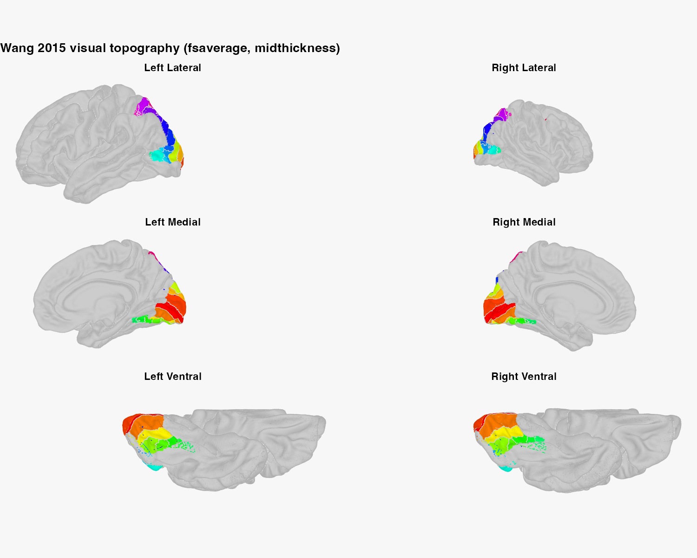
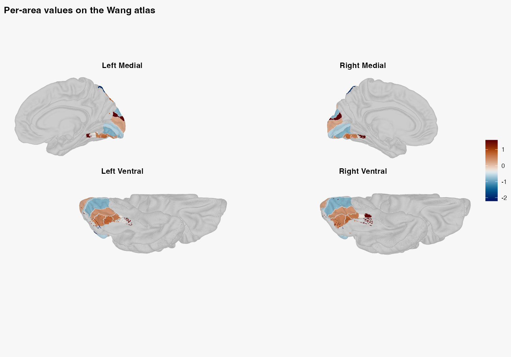
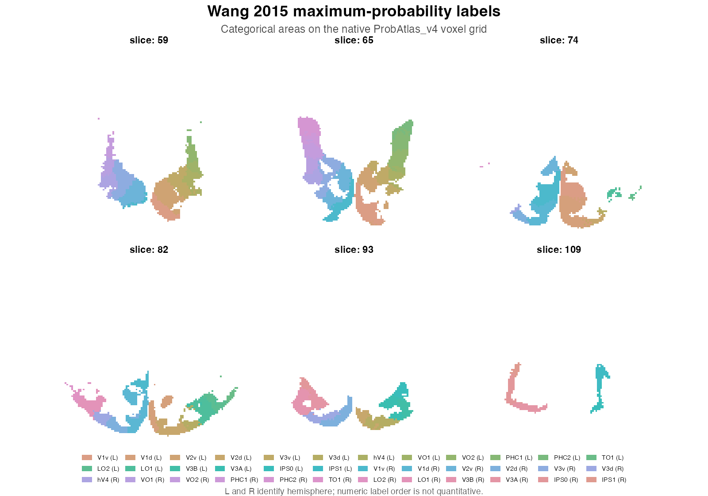

Wang Visual Cortex Atlas: Surface and Volume
Source:vignettes/wang-visual-cortex.Rmd
wang-visual-cortex.RmdThe Wang et al. (2015) atlas describes 25 retinotopic and functional
visual areas per hemisphere. neuroatlas exposes two related
products: a labelled fsaverage surface atlas and the
authors’ probabilistic volume distribution. They share a region
vocabulary, but they are not interchangeable coordinate
representations.
Network-backed chunks are displayed but not executed during package builds. The figures are committed outputs generated from the code shown.
Which product should you use?
| Scientific question | Loader | Representation |
|---|---|---|
| where do areas lie on cortex? | get_wang_atlas() |
surfatlas in fsaverage / MNI305
coordinates |
| what is the maximum-probability voxel label? | get_wang_prob_atlas(image = "maxprob") |
raw NeuroVol pair on the native ProbAtlas grid |
| what probability does one area have at each voxel? | get_wang_prob_atlas(image = "probability") |
raw continuous NeuroVol objects |
Choose the representation from the analysis, not from which picture is easier to make.
How do you load the native surface atlas?
get_wang_atlas() returns 50 regions: the same 25 area
names in each hemisphere. The default midthickness geometry and label
overlays may be downloaded and cached on first use.
library(neuroatlas)
wang <- get_wang_atlas(surf = "midthickness")
meta <- roi_metadata(wang)
stopifnot(
inherits(wang, "surfatlas"),
length(wang$ids) == 50L,
all(table(wang$hemi) == c(left = 25L, right = 25L)),
atlas_ref(wang)$template_space == "fsaverage",
atlas_ref(wang)$coord_space == "MNI305"
)The medial and ventral views reveal early and ventral visual cortex;
lateral views show dorsal and lateral areas.
background = TRUE keeps the unlabelled cortex visible as
anatomical context.
plot_brain(
wang,
views = c("lateral", "medial", "ventral"),
interactive = FALSE,
style = "ggseg_like",
background = TRUE,
title = "Wang 2015 visual topography (fsaverage, midthickness)"
)
How do you map area-level values?
Supply one value for every region ID. To pair homologous labels across hemispheres, map by label explicitly rather than assuming the two halves share an accidental row order:
set.seed(1)
area_values <- stats::setNames(
stats::rnorm(length(unique(wang$labels))),
unique(wang$labels)
)
values <- unname(area_values[wang$labels])
stopifnot(
length(values) == length(wang$ids),
identical(
values[wang$hemi == "left"],
values[wang$hemi == "right"]
)
)
plot_brain(
wang,
vals = values,
views = c("medial", "ventral"),
interactive = FALSE,
style = "ggseg_like",
background = TRUE,
palette = "vik",
colorbar = "right",
colorbar_title = "Response (a.u.)",
title = "Per-area values on the Wang atlas"
)
get_roi(wang, label = "hV4") returns one
ROISurface per hemisphere. Use hemi = "left"
or hemi = "right" when the analysis is unilateral.
How do you inspect the volume product safely?
A manifest is side-effect-free. It states the source, requested files, and whether those files are already cached:
library(neuroatlas)
manifest <- get_wang_prob_atlas(
image = "maxprob",
hemi = "both",
path_only = TRUE
)
manifest$files[c("hemi", "member", "exists")]
#> # A tibble: 2 × 3
#> hemi member exists
#> <chr> <chr> <lgl>
#> 1 lh subj_vol_all/maxprob_vol_lh.nii.gz FALSE
#> 2 rh subj_vol_all/maxprob_vol_rh.nii.gz FALSESet path_only = FALSE to download and read the volumes.
The left and right label maps must share a grid and must not overlap
before they are combined:
wp <- get_wang_prob_atlas(
image = "maxprob",
hemi = "both",
path_only = FALSE
)
left <- as.array(wp$volumes$lh)
right <- as.array(wp$volumes$rh)
stopifnot(
identical(dim(left), dim(right)),
identical(
neuroim2::space(wp$volumes$lh),
neuroim2::space(wp$volumes$rh)
),
!any(left > 0 & right > 0),
all(unique(left[left > 0]) %in% wp$labels$id),
all(unique(right[right > 0]) %in% wp$labels$id)
)
right[right > 0] <- right[right > 0] + 25L
labels <- neuroim2::NeuroVol(
left + right,
neuroim2::space(wp$volumes$lh)
)Render the label map categorically on its native grid unless you have a validated anatomical reference in that same space. The zero background is omitted, and only areas present in the selected slices receive colours:
label_array <- as.array(labels)
occupied <- which(label_array > 0, arr.ind = TRUE)
slice_ids <- unique(as.integer(stats::quantile(
occupied[, 3],
probs = seq(0.08, 0.92, length.out = 6),
type = 1
)))
x_limits <- pmax(
1L,
pmin(dim(label_array)[1], range(occupied[, 1]) + c(-7L, 7L))
)
y_limits <- pmax(
1L,
pmin(dim(label_array)[2], range(occupied[, 2]) + c(-7L, 7L))
)
slice_data <- do.call(rbind, lapply(slice_ids, function(z) {
index <- which(label_array[, , z] > 0, arr.ind = TRUE)
data.frame(
x = index[, 1],
y = index[, 2],
region_id = label_array[cbind(index[, 1], index[, 2], z)],
slice = factor(z, levels = slice_ids)
)
}))
region_names <- c(
stats::setNames(paste0(wp$labels$label, " (L)"), wp$labels$id),
stats::setNames(paste0(wp$labels$label, " (R)"), wp$labels$id + 25L)
)
present_ids <- sort(unique(slice_data$region_id))
region_palette <- stats::setNames(
grDevices::hcl.colors(length(present_ids), "Dynamic"),
present_ids
)
wang_figure <- ggplot2::ggplot(
slice_data,
ggplot2::aes(x, y, fill = factor(region_id))
) +
ggplot2::geom_tile(width = 1, height = 1) +
ggplot2::facet_wrap(~slice, ncol = 3, labeller = ggplot2::label_both) +
ggplot2::coord_fixed(xlim = x_limits, ylim = y_limits, expand = FALSE) +
ggplot2::scale_fill_manual(
values = region_palette,
labels = region_names[as.character(present_ids)],
name = NULL,
drop = FALSE
) +
ggplot2::labs(
title = "Wang 2015 maximum-probability labels",
subtitle = "Categorical areas on the native ProbAtlas_v4 voxel grid",
caption = paste(
"L and R identify hemisphere; numeric label order is not quantitative."
)
) +
ggplot2::theme_void(base_size = 11) +
ggplot2::theme(
legend.position = "bottom",
legend.text = ggplot2::element_text(size = 6.5),
legend.key.size = grid::unit(0.28, "lines"),
legend.key.width = grid::unit(0.75, "lines"),
legend.box = "horizontal",
plot.title = ggplot2::element_text(
face = "bold", hjust = 0.5, size = 16
),
plot.subtitle = ggplot2::element_text(hjust = 0.5, colour = "grey30"),
plot.caption = ggplot2::element_text(hjust = 0.5, colour = "grey35"),
strip.text = ggplot2::element_text(face = "bold", size = 10),
panel.background = ggplot2::element_rect(
fill = "white", colour = "grey85"
),
plot.background = ggplot2::element_rect(fill = "white", colour = NA)
) +
ggplot2::guides(
fill = ggplot2::guide_legend(nrow = 3, byrow = TRUE)
)
wang_figure
This figure deliberately has no unrelated T1 background. Nearest-neighbour resampling preserves integer labels on a new grid; it does not prove that an FSL-MNI product and a different MNI template are anatomically registered.
What about the other visual-cortex atlases?
get_visfatlas() loads the 33-region Rosenke et
al. functional visual atlas on its distributed 1 mm single-subject MNI
grid. Its provenance records alignment to MNI colin27.
get_visual_atlas() derives V1-V5 regions from Julich-Brain.
Both return ordinary volume atlas objects and can be
rendered directly:
visf <- get_visfatlas()
plot(visf, nslices = 8, title = "visfAtlas on its distributed voxel grid")
julich_visual <- get_visual_atlas()
plot(julich_visual, nslices = 8, title = "Julich-derived V1-V5")Do not resample visfAtlas onto
MNI152NLin2009cAsym and call the result aligned: regridding
is not a validated colin27-to-MNI2009 nonlinear transform. Inspect
atlas_ref() and the transform plan before any
cross-template overlay.
A representation checklist
Before analysis, record:
- atlas product and citation;
- surface or volume representation;
- declared template and coordinate space;
- region-ID convention, including hemisphere offsets;
- any transform applied, with interpolation method and provenance.
That record is what makes the surface and volume versions scientifically traceable rather than merely visually similar.
References
Wang, L., Mruczek, R. E. B., Arcaro, M. J., & Kastner, S. (2015). Probabilistic Maps of Visual Topography in Human Cortex. Cerebral Cortex, 25(10), 3911-3931.
Rosenke, M., van Hoof, R., van den Hurk, J., Grill-Spector, K., & Goebel, R. (2021). A Probabilistic Functional Atlas of Human Occipito-Temporal Visual Cortex. Cerebral Cortex, 31(1), 603-619.